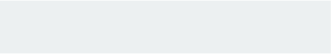
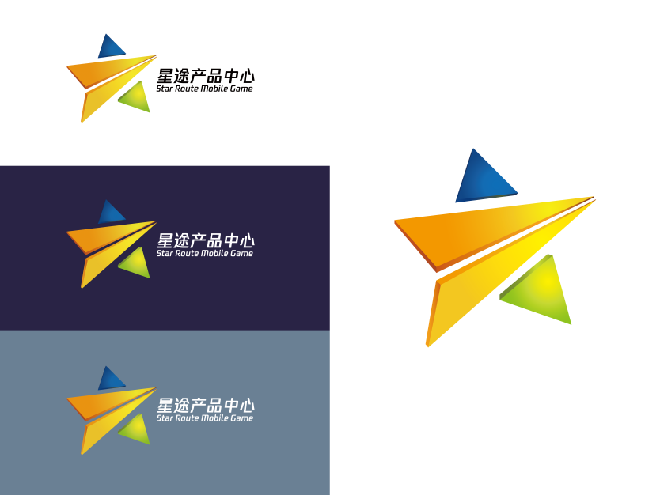

Internship
@ Tencent Star Route Mobile Game
June 2018
· Be Responsible for two projects for the 1th anniversary for a newly published SLG Game.
· Created the logo for the Tencent Star Route Mobile Game, which is the division for SLG games in the Tencent Mobile Game. The logo is now on the official website.
· Frequent communicate with the clients
Background
During 2017 Summer I interned in the Tencent Mobile Game in Shanghai. My job is renovating advertising pages and creating a logo for a new department.
It was a great expereince that I had chances communicating with some of the experts in the area and learnt how to effiectly work in an office environment.
Planning and learning
Every week there will be a group meeting to talk about the progress and plan for future works. In those sessions I learnt how to discuss an idea clearly and communicate with colleagues on important topics.
Logo for Star Route Mobile Game
As a mobile game company, this studio, Star Route Mobile Game focus on stragy mobile games. The crew of the studios started one year ago, so I try to show the “route” of their future.

